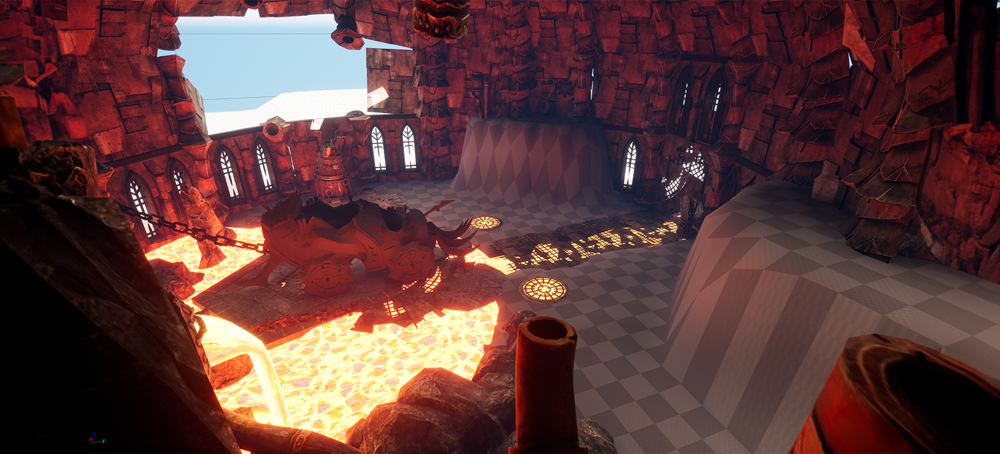
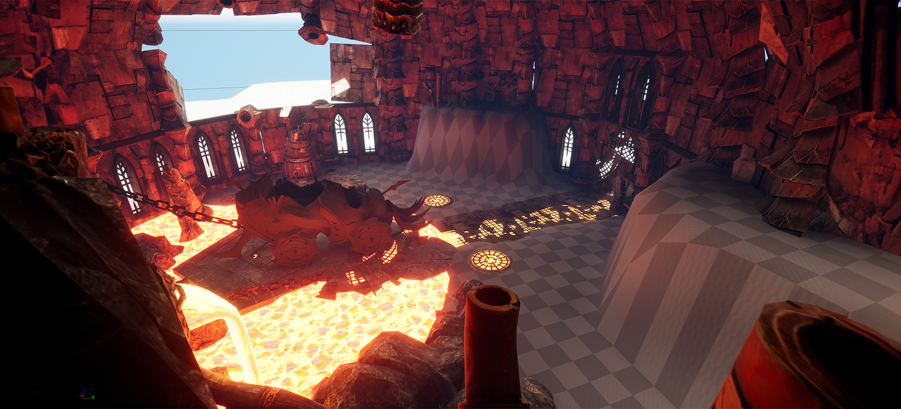

INFERNO'S DESCENT
#Trpg #3D #DnD #ProofOfConcept
Inferno's Descent est un une Proof Of Concept d'un jeu de type T-RPG d'une camapgne JDR inspiré du livre Donjons et Dragons : Descent into Avernus
Pour ce projet j'ai travaillé sur le Game & Level Design, le Narrative Design
ainsi que le Level Art.
[En savoir plus]


 
